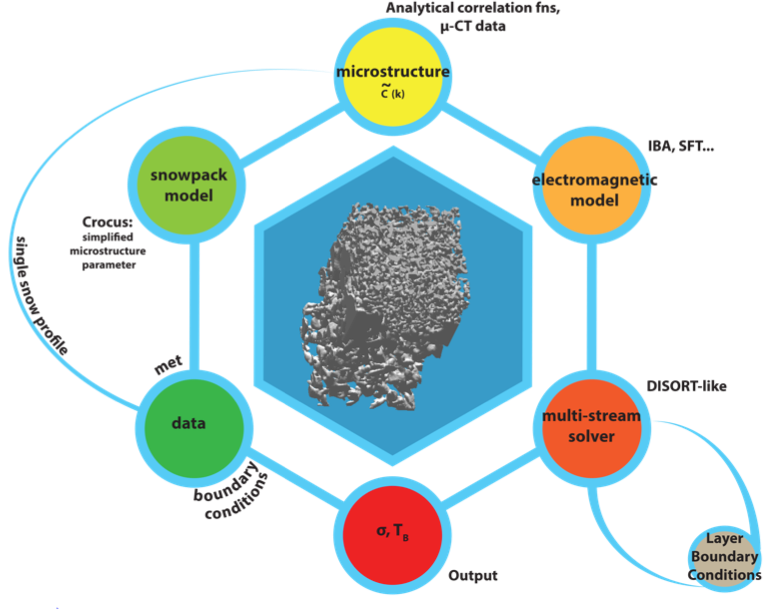

SMRT: Snow Microwave Radiative Transfer model
SMRT is an active / passive microwave multilayer radiative transfer model for snow, sea-ice and lake ice written in Python. It was developed with European Space Agency support in order to investigate the representation of the snow microstructure, the main driver of scattering, but has now a wider usage.
SMRT is extremely modular, so allows easy intercomparisons between different modelling approaches in a plug-and-play way. SMRT proposes different electromagnetic theories to compute scattering (DMRT, IBA, Rayleigh independent, ...). In the case of IBA, different microstructure representations can be used (Sticky Hard Spheres, Exponential, Gaussian random field, ...). The current version proposes only one radiative transfer solver (DORT) but this can be extended. Last but not least, wrappers are included to run MEMLS, HUT and DMRT-QMS models (in their original matlab code) from within SMRT. Whilst there is plenty to get started with, there are more theoretical advances that can be made. SMRT is intended to be a community model - all are welcome to use it, and to contribute to its development!
SMRT uses the lastest python version (e.g. 3.8) but also works with earlier versions (3.7 and higher). The code is open source and is hosted on github.
Using SMRT is easy
You must write a (short) driver code, SMRT is a library that your driver code call to perform a calculation. This is simple, there are four main steps in a typical driver code:
construct a snowpack (either from field data or snowpack model).
snowpack = make_snowpack(thickness=10., # 10 m deep snowpack microstructure_model="sticky_hard_spheres", density=320.0, # 320 kg/m3 temperature=260, # 260 K radius=100e-6) # 100 microns
configure an active or passive sensor with frequency, etc.
select the radiative transfer solver, the electromagnetic theory and the microstructure. Optionaly other components can be selected.
call "run" for the created model.
The result can be inspected to get brightness temperature or backscattering coefficient at different polarizations, incidence angles, etc.
SMRT is clearly structured
SMRT is structured in different components:
Microstructure model (to represent snow microstructure)
Electromagnetic model (to compute scattering and absorption)
Radiative transfer solver
Substrate (optional)
Atmosphere (optional)
Interlayer reflectivity (optional)
Permittivity (optional)
Each can have any number of implementations (e.g. different radiative transfer solver) the selection is done at runtime in your driver code. It is relatively easy to add new implementations especially by copying and modifying existing implementations. SMRT automatically recognize any new implementations, no need to compile or write a configuration files. It is immediately in.